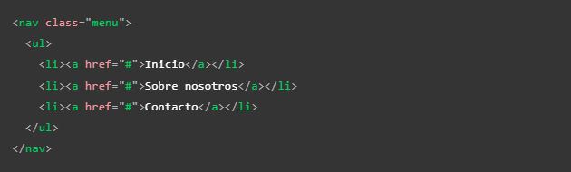
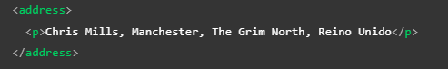
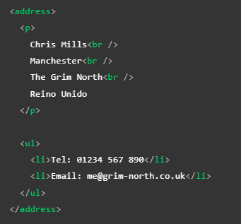

Header
-
Esta etiqueta cumple la función de actuar como un contenedor de la cabecera de la página; comúnmente se define como una franja horizontal ubicada en la parte superior de la página, suele incluir el título o nombre de la página, así como un logo y puede que un eslogan.
También puede incorporarse como encabezado de secciones como "section" o "article", en cuyo caso únicamente será el encabezado particular de cada sección.
Nav
-
El rol de esta etiqueta es contener los elementos de navegación principal de la página, por lo que suele contener enlaces, pestañas y botones; es decir, contiene el menú de navegación principal. Es común que se llegue a incorporar al encabezado; sin embargo, también puede ser positivo el manejarlo como un elemento aparte, ya que hace más fácil la interacción con los motores de lectura.
Nota: Una buena práctica es agrupar los elementos del "nav" en una lista desordenada de la siguiente forma:

Main
-
En este elemento se ubica el cuerpo principal de la página; suele ubicarse directamente dentro de "body" y se utiliza una vez por página. Este se divide en otros contenedores que conforman el contenido de la página; estos contenedores son:
- Section: Esta etiqueta se usa para dividir la página en secciones; una buena práctica es empezar cada encabezado con un título de encabezado. Incluso se podría usar para dividir un "article" en secciones.
- Article: Esta etiqueta encuadra un bloque de contenido que tiene sentido por sí mismo aparte del resto de la página; cumple con el objetivo de llegar a ser reutilizable, por ejemplo: una entrada de un blog. También puede anidarse y vincularse con autores; básicamente almacena elementos de contenido independientes.
- Div: El div se usa para crear secciones o para agrupar contenido de cualquier tipo.
- Aside: Por último, pero no menos importante, el elemento "aside" hace referencia a la barra lateral de la página; suele incorporarse dentro de "main" pese a que hace referencia a otra área de la página.
Aside
-
Este elemento hace referencia a la barra lateral de la página; suele incorporarse a la izquierda o derecha e incluso en ambos costados dependiendo del diseño del sitio. Suele contener algún tipo de información complementaria al contenido principal, por ejemplo: enlaces, citas, resúmenes, bibliografías, algún menú de navegación secundario o simplemente publicidad.
Footer
-
Esta es la última sección de la página; en ella se ingresa la llamada "letra pequeña" e información de contacto. También pudiese contener algún otro tipo de enlaces de navegación; esta sección, al igual que el encabezado, suele ser común para toda la página.
Address
-
Como tal, la etiqueta "address" no se trata de una etiqueta contenedora en sí; sin embargo, es justo nombrarla en este apartado debido a su gran relación con otras etiquetas contenedoras, especialmente con la etiqueta "article", ya que su función es aportar la información de contacto de un "article" cercano o de un elemento padre como "body". Su forma de empleo es similar a una etiqueta contenedora envolviendo su contenido; sin embargo, se trata de una etiqueta semántica creada únicamente con el propósito de brindar la información de contacto.
Ejemplo 1

Ejemplo 2
